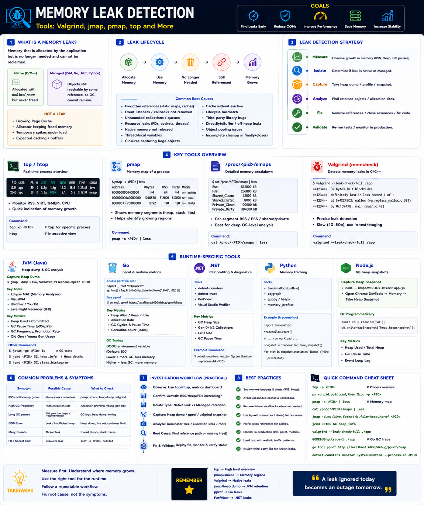

valgrind, jmap, pmap, top — Staff Engineer level
The Big Picture
When memory is never released, the application grows continuously until performance drops, GC pauses increase, swapping begins, OOM occurs, or Kubernetes kills the container.
Memory leak detection identifies where memory is retained and why it cannot be reclaimed.
What is a Memory Leak?
Native (C/C++)
Memory allocated via malloc()/new is never released. Memory permanently leaks.
Managed (Java/Go/.NET)
Objects remain reachable via references — GC cannot free them. More accurately called Memory Retention.
Memory Growth vs Memory Leak
Not every growing process has a leak. Staff Engineers distinguish normal growth first.
| Situation | Memory Leak? |
|---|---|
| Growing Page Cache | ❌ No |
| jemalloc Arena Growth | ❌ Usually No |
| JVM Heap Growth with Stable Live Set | ❌ Normal |
| Cache Without Eviction | ✅ Yes |
| Static Map Continuously Growing | ✅ Yes |
malloc() Without free() | ✅ Yes |
Types of Memory Leaks
| Type | Runtime | Example |
|---|---|---|
| Native Leak | C/C++ | Missing free() |
| Managed Leak | JVM / Go / .NET | Objects still referenced |
| Resource Leak | All | File descriptors, sockets |
| Cache Leak | All | Unbounded cache |
| Listener Leak | Java / .NET | Event listeners never removed |
| Thread Leak | All | Threads never terminate |
| Native Buffer Leak | JVM | DirectByteBuffer not released |
Investigation Flow — Outside to Inside
Never start by reading code. Start with measurements.
OS-Level Detection — top, pmap, /proc
First confirm whether process memory is actually growing.
| Metric | Meaning |
|---|---|
| RSS | Actual physical memory in use |
| VIRT | Virtual address space size |
| %MEM | Process memory as % of total |
| SWAP | Swapped-out memory |
A continuously increasing RSS often indicates a leak or memory retention.
Valgrind — Native C/C++ Leak Detection
Gold standard for native memory leaks. Intercepts malloc(), calloc(), realloc(), and free().
Leak categories reported
| Category | Meaning |
|---|---|
| Definitely lost | No pointer exists — true leak |
| Indirectly lost | Lost via another lost block |
| Possibly lost | Interior pointer — may be lost |
| Reachable | Still referenced at exit |
Trade-off: 20–50× slower execution. Use in testing/CI, not production.
Modern Native Alternatives
| Tool | Best For |
|---|---|
| Heaptrack | Allocation profiling — much faster than Valgrind |
| AddressSanitizer (ASan) | Leak + corruption detection — suitable for CI |
| LeakSanitizer (LSan) | Fast leak detection standalone |
JVM — jmap, jcmd, jstat
Heap dump analysis tools
Heap Dump Analysis — Key Concepts
| Concept | Meaning |
|---|---|
| Shallow Size | Memory of the object itself |
| Retained Size | All memory freed if this object were collected |
| Dominator Tree | Objects responsible for largest retained memory |
| GC Root Path | Why the object is still alive |
The Dominator Tree is usually the fastest path to identifying the leak source.
Go — pprof Heap Profiling
.NET — dotnet-counters, PerfView
Real-World Examples
Spring Boot — Cache Without Eviction
C++ Service — Missing free()
Go Service — Global Variable
Staff Engineer Thinking
Junior
Memory keeps increasing.
Senior
Is there a heap leak?
Staff asks
Production Failure Scenarios
RSS Continuously Growing
Cause: Native memory leak or allocator growth · Fix: Inspect pmap, heap dump, allocator stats
JVM Heap Never Shrinks
Cause: Retained objects · Fix: Analyze heap dump with Eclipse MAT Dominator Tree
High RSS but Stable Heap
Cause: Native memory leak or allocator fragmentation · Fix: Check DirectByteBuffers, malloc arenas, jemalloc stats
Kubernetes OOMKilled
Cause: Container exceeds memory limit · Fix: Capture heap dump before restart; review off-heap usage
Staff Engineer Decision Framework
| Scenario | Recommended Tool |
|---|---|
| OS Memory Growth | top, htop, ps |
| Memory Mappings | pmap, /proc/PID/smaps |
| Native Leak | Valgrind, Heaptrack, ASan |
| JVM Leak | jmap, jcmd, Eclipse MAT |
| Go Leak | pprof |
| .NET Leak | PerfView, dotnet-counters |
| Production Monitoring | Prometheus + Grafana + JFR / pprof |
Tool Comparison
| Tool | Runtime | Purpose | Best For |
|---|---|---|---|
top | All | Process memory overview | First diagnosis |
pmap | Linux | Memory mapping | Heap vs native split |
| Valgrind | C/C++ | Precise leak detection | Native applications |
| Heaptrack | C/C++ | Allocation profiling | Performance analysis |
jmap | JVM | Heap dump | Java memory leaks |
| Eclipse MAT | JVM | Heap analysis | Retained objects |
pprof | Go | Heap profiling | Go services |
| PerfView | .NET | Heap & GC analysis | .NET applications |
Production Debugging Checklist
toppmap, smaps)Key Takeaways
